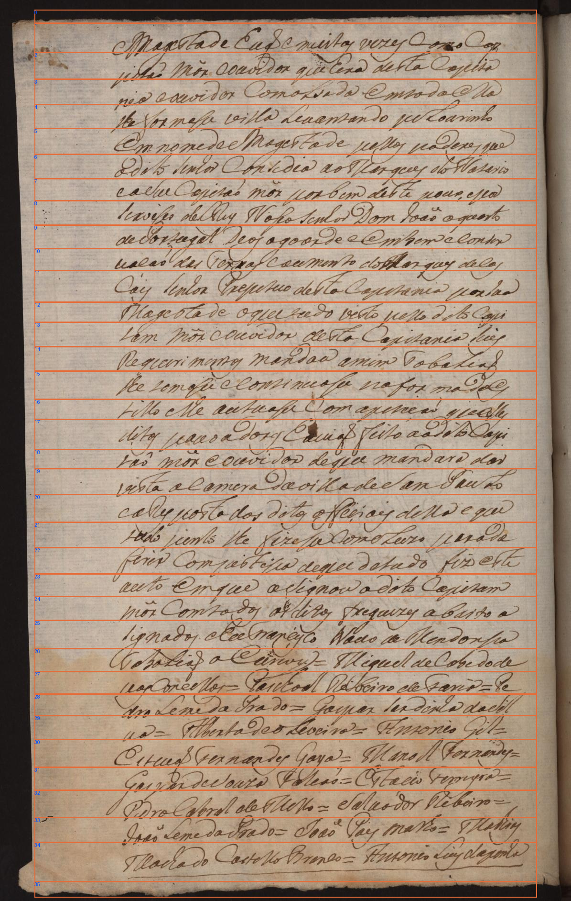
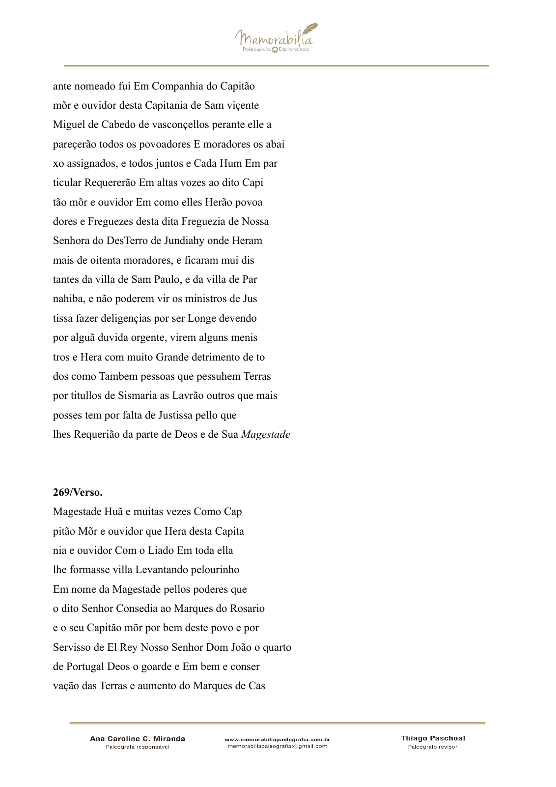
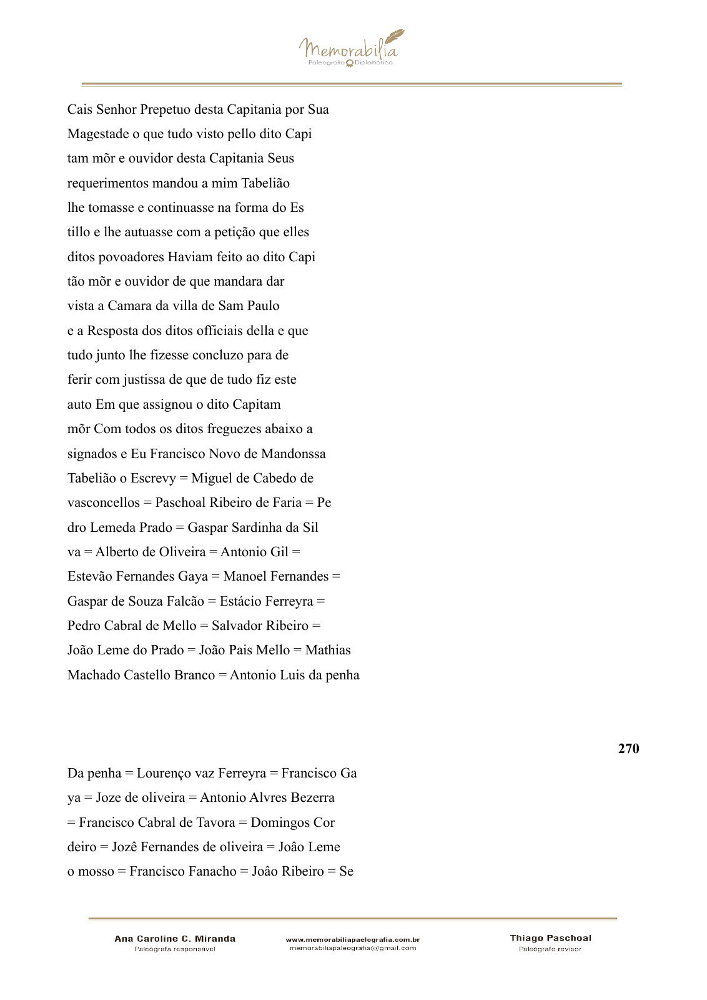

PP-OCRv6 medium/Kraken · comparação com a edição · 22/10/2026
Diagnóstico de desenvolvimento. Mesmos pesos e parâmetros do reto; sem treinamento, nova validação humana ou teste reservado. As revisões anteriores permanecem intactas.
| Página completa | CER | WER |
|---|---|---|
| 269 reto | 26,97% | 60,31% |
| 269 verso | 16,48% | 56,25% |
Verso: 237/1438 operações em caracteres e 153/272 em palavras. 34 linhas editoriais, 36 recortes automáticos, zero falhas técnicas; as duas bordas retornaram vazias e foram mantidas.
A diferença entre reto e verso descreve conteúdos distintos do mesmo documento. Não indica adaptação do modelo nem generalização. O cálculo preserva caixa, grafia, acentos, pontuação e convenções editoriais.
Erros frequentes incluem trocas de letras, junções e separações de palavras, nomes próprios e acentuação. Exemplos: formasse → fosmasse; Resposta → Res posta; Machado → Tacha do. A contribuição da segmentação não foi isolada.
Relatório completo · Saída bruta · Texto oficial · Métricas · Auditoria
Pareamento geométrico inspecionado pelo assistente para apresentação, sem alterar o bruto. O cálculo principal usa a sequência completa. Ordens iniciadas em zero; linhas textuais 1–34.
| Local | Edição oficial | Saída bruta |
|---|---|---|
| Borda, ordem 0 Recorte | [borda sem alvo textual] | [saída vazia] |
| Linha 1 Recorte | Magestade Huã e muitas vezes Como Cap | Magestade Euaõ e mitas vezes como Cop |
| Linha 2 Recorte | pitão Mõr e ouvidor que Hera desta Capita | issaõ mon eouvidor que hera desta Capisa |
| Linha 3 Recorte | nia e ouvidor Com o Liado Em toda ella | nia e ouvidor Comalsada emta da ella |
| Linha 4 Recorte | lhe formasse villa Levantando pelourinho | lhe fosmasse villa Leuantando peLoarinho |
| Linha 5 Recorte | Em nome da Magestade pellos poderes que | Em nome de Mogestade pellos paderes que |
| Linha 6 Recorte | o dito Senhor Consedia ao Marques do Rosario | o dito senhor Consedia ao Marques do Nazario |
| Linha 7 Recorte | e o seu Capitão mõr por bem deste povo e por | e asue Capitaõ mor poabem deste pour, e scor |
| Linha 8 Recorte | Servisso de El Rey Nosso Senhor Dom João o quarto | sexvises de Rey Nosso senhor Dom doaõ o querto |
| Linha 9 Recorte | de Portugal Deos o goarde e Em bem e conser | de Portagal Deos o goor de e embem e conser |
| Linha 10 Recorte | vação das Terras e aumento do Marques de Cas | uacaõ das Texnas cacmento do Marques decas |
| Linha 11 Recorte | Cais Senhor Prepetuo desta Capitania por Sua | Cais senhoa Prepetuo desta Capetania porsua |
| Linha 12 Recorte | Magestade o que tudo visto pello dito Capi | Magesta de o que tudo visto pelso dito Cqui |
| Linha 13 Recorte | tam mõr e ouvidor desta Capitania Seus | tam mor couvidor desta Capisania sus |
| Linha 14 Recorte | requerimentos mandou a mim Tabelião | Requrimentos mandaa amim Tobaliaõ |
| Linha 15 Recorte | lhe tomasse e continuasse na forma do Es | lhe somasu e consinuass na foa madaes |
| Linha 16 Recorte | tillo e lhe autuasse com a petição que elles | tillo elhe autuase Com aperçaõ queelle |
| Linha 17 Recorte | ditos povoadores Haviam feito ao dito Capi | ditos pauo a dose Eauaõ feito aa dito Capi |
| Linha 18 Recorte | tão mõr e ouvidor de que mandara dar | taõ mon couvidor de que mandara dar |
| Linha 19 Recorte | vista a Camara da villa de Sam Paulo | vista a camera da villa de SSam Pauto |
| Linha 20 Recorte | e a Resposta dos ditos officiais della e que | e a Res posta dos ditos offeciais della e que |
| Linha 21 Recorte | tudo junto lhe fizesse concluzo para de | iudo junto lhe fizesa comoLuzo parade |
| Linha 22 Recorte | ferir com justissa de que de tudo fiz este | firir Compstissa de que detado fiz este |
| Linha 23 Recorte | auto Em que assignou o dito Capitam | auto em que a signou o dito Capizam |
| Linha 24 Recorte | mõr Com todos os ditos freguezes abaixo a | mõr Comtados osditos freguizes abaito a |
| Linha 25 Recorte | signados e Eu Francisco Novo de Mandonssa | signados e heTraneyco Nauo de Mendonsa |
| Linha 26 Recorte | Tabelião o Escrevy = Miguel de Cabedo de | Nobaliaõ o Ccrevy = Miquel de Cabe dode |
| Linha 27 Recorte | vasconcellos = Paschoal Ribeiro de Faria = Pe | pasConeellos = Paschoal Rebeiro de Faria = Pe, |
| Linha 28 Recorte | dro Lemeda Prado = Gaspar Sardinha da Sil | dro Lemeda Prado = Gaspar serdinha da Sil |
| Linha 29 Recorte | va = Alberto de Oliveira = Antonio Gil = | ua= Alberta deo Leveira = Ansonio Gil= |
| Linha 30 Recorte | Estevão Fernandes Gaya = Manoel Fernandes = | Esteuaõ Ternandes Gaya = Manoel Fernandes= |
| Linha 31 Recorte | Gaspar de Souza Falcão = Estácio Ferreyra = | Gaspar de Souza Faleaõ = Estacio Terreyra = |
| Linha 32 Recorte | Pedro Cabral de Mello = Salvador Ribeiro = | Pedro Cabral de Mello = Salaador Ribeiro= |
| Linha 33 Recorte | João Leme do Prado = João Pais Mello = Mathias | doaõ Leme da Prado = Ioaõ Pais malho = Malhias |
| Linha 34 Recorte | Machado Castello Branco = Antonio Luis da penha | Tacha do Castello Brenco = Antonio Liu daponha |
| Borda, ordem 35 Recorte | [borda sem alvo textual] | [saída vazia] |



Preservados por hash: 789 arquivos versionados e 82 arquivos de workspaces. As oito ressalvas históricas do reto permanecem registradas.